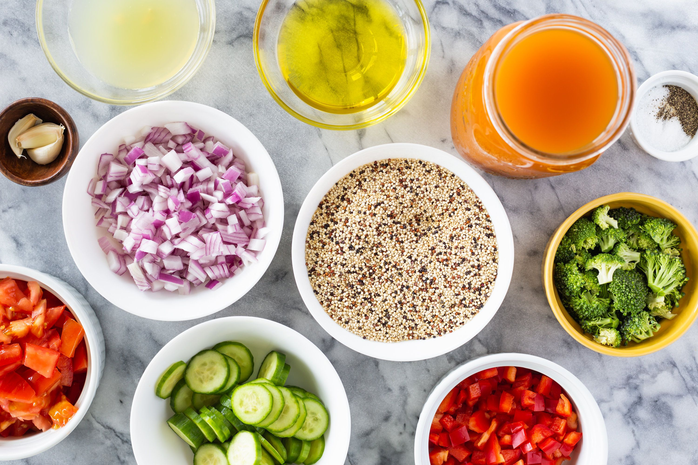

Welcome to RecipeFinder
Let us help you find a recipe! Follow our Step By Step Tutorial below.

Setting up your Cabinet
- Select "My Cabinet" in the navigation above.
- Now select a cabinet you want to enter your ingredients in.
- Add your ingredients to your pantry, fridge, freezer, and spice rack.